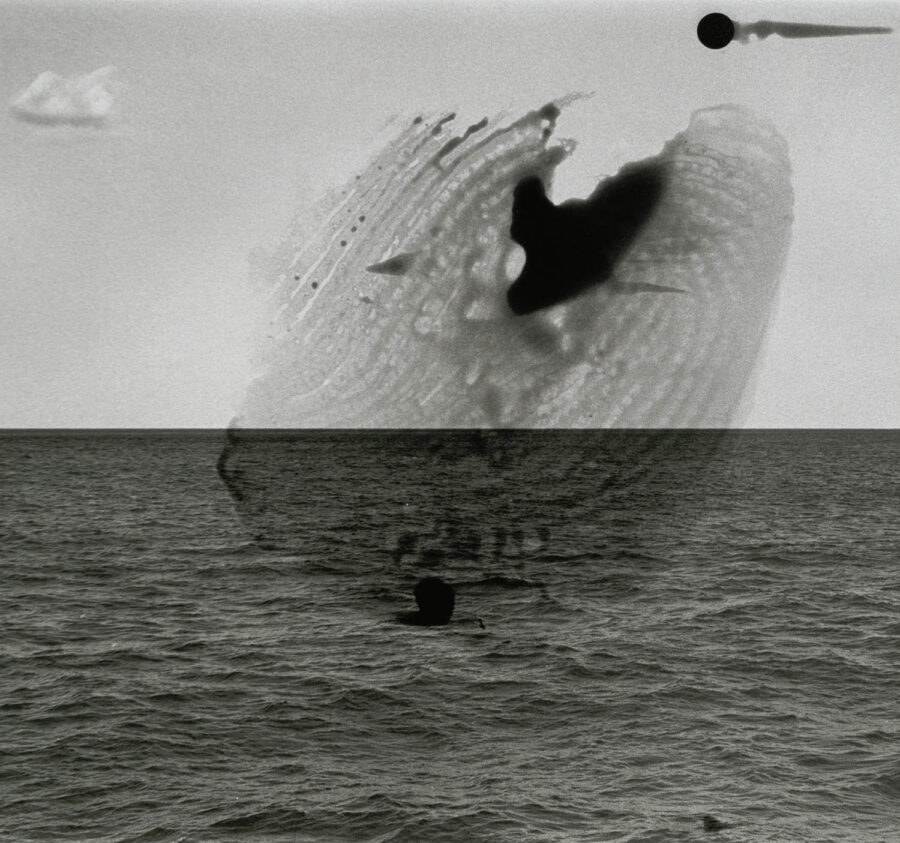

Anju Lukose-Scott | Horizon Lines: Imagining Potentiality
In Horizon Lines: Reimagining Potentiality, artist and curator Anju Lukose-Scott explores the horizon line as not only a vanishing point but also as a marker of potential: a boundary between what is and what could be.
In the local landscapes of the Midwest and the Great Plains, the horizon stretches wide and uninterrupted, creating a dialogue between land and sky that is both expansive and intimate. The enormity of Lake Michigan introduces a tension between the known and the unknown. In the vastness of outer space, where the ‘horizon’ is bent into planetary curves or vanishes altogether, there is a new kind of potential: one unbound by terrestrial limits. Through visual abstraction, the horizon dissolves as a fixed reference and reconstitutes itself as a conceptual one. What does it mean when there are multiple horizons? What becomes of potential when it is completely ungrounded, detached from any sense of place or scale?
Over the course of Horizon Lines: Reimagining Potentiality, the horizon line becomes a universal subject. Work by artists Zarouhie Abdalian, Frederick Bailie, Hai-Wen Lin, Nazafarin Lotfi, magicfeifei, and Anika Steppe and from the Joel Snyder Materials Collection challenges us to rethink the horizon line: how can we arrive at a place dependent on distance? Can we collapse the horizon line, fold it, touch it, move through it? For Lukose-Scott, the horizon line emerges as a tool for rethinking boundaries and borders, time and space, inviting us to arrive at the convergence of the present and the future.